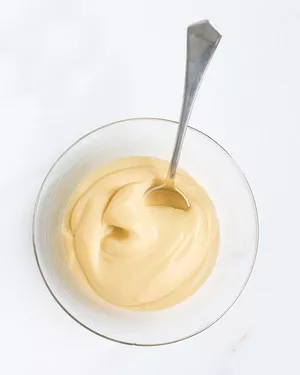

Butterscotch Pudding

Description
Don't bother with a box mix -- make homemade pudding that's way better and still so easy with our foolproof recipe.
Ingredients
- ½ cup packed dark-brown sugar
- 3 tablespoons cornstarch
- ⅛ teaspoon fine salt
- 1 ½ cups whole milk
- ½ cup heavy cream
- 2 large egg yolks
- 2 tablespoons unsalted butter
- ½ teaspoon pure vanilla extract
Steps
- Place a fine-mesh sieve over a medium heatproof bowl and set aside. In a medium saucepan, combine dark-brown sugar, cornstarch, and salt. In a medium bowl, whisk together milk, cream, and egg yolks; add to saucepan.
- Whisking constantly, cook over medium-high until mixture thickens and is bubbling, 8 to 12 minutes. Reduce heat to medium-low and cook, whisking, 1 minute.
- Remove pan from heat and pour mixture through sieve into bowl. Stir in butter and vanilla until combined.
- Press plastic wrap directly against surface of pudding to prevent skin from forming and refrigerate 3 hours (or up to 3 days). To serve, whisk until smooth and divide among four small bowls.